内容要点
一段 3 分 14 秒的额头骨相美学分析。核心立论：发际线的形状是额头骨相的外在表现，不是可随便贴的装饰品——林青霞能驾驭花瓣型发际线是因为骨相底子，没有底子硬做=戏剧贴片子的违和。好看额头的标准：上窄下宽的梯形（开阔大气 vs 上宽下窄的局促）。额结节把额头分为亮面/灰面：点位合适+眉弓视觉高光点外移→梯形出现→开阔额头弱化脸宽；额结节包裹眉弓、眉弓呼应颧骨→结构舒展。反面案例：额结节过近+眉弓高光近垂直=正方形额面扁平局促、显脸长；调整后=正梯形+额结节眉弓眼眶联动+外框C包裹颧弓。两个骨点把额头分额顶（承接头骨）/额面（衔接T区），形成面部高位收纳面中；额颞转折线决定额头是球形还是T面。隐藏细节：颞部饱满+发型打造卢米斯之圆，不是单一高颅顶而是模拟饱满头骨形成头包脸。结语：看不懂的调整三年后成主流。
知识结构
发际线形状是骨相外在表现；无底子硬做花瓣发际线=贴片子违和。
上窄下宽梯形=开阔大气；早期林青霞上宽下窄+眉弓高光靠内=局促钝感。
额结节分亮面/灰面；点位合适+高光外移→梯形出现→弱化脸宽、呼应颧骨。
额结节过近+正方形额面=扁平显脸长；调整后正梯形+外框C包裹颧弓=立体。
两个骨点分额顶/额面，额面衔接T区，形成高位收纳面中。
决定球形还是T面；转折明显→灰面承托亮面、暗面后退。
颞部饱满+卢米斯之圆→头包脸；看不懂的调整三年后成主流。
额头好看与否由骨相结构决定，核心是三个层次：①梯形法则——上窄下宽梯形=开阔大气，上宽下窄=局促钝感；②额结节点位——把额头分为亮面/灰面，点位合适+眉弓视觉高光点外移→梯形成立→包裹眉弓、呼应颧骨、弱化脸宽；③转折线——额颞转折线（额结节+眉弓高光点）决定额头是球形还是T面，转折明显才有灰面承托亮面、暗面后退的层次。隐藏升级：颞部饱满+发型打造卢米斯之圆=模拟饱满头骨形成头包脸，而非单一高颅顶。变美=建立骨相与光影的逻辑，不是贴装饰。
00:00-00:24立论：发际线形状=骨相的外在表现
开场双问：「为什么林青霞能够驾驭住花瓣型发际线，端庄不失柔美？而为什么有些人去做个一模一样的，放在自己脸上总感觉哪里不对劲？」
答案一针见血：「发际线的形状是额头骨相的外在表现，不是可以随便贴上去的装饰品。」
反面是戏剧里的贴片子：「没有那个骨相底子，却硬要做个花瓣型发际线……单看发际线挺好看，但放大到整张脸就是两个字：违和。」

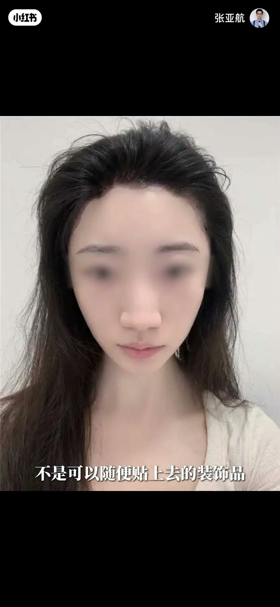

00:24-00:49好看额头=上窄下宽的梯形
好看标准很具体：「好看的额头都有一个上窄下宽的梯形，当这个梯形在额头上呈现得当时，额头开阔大气，反之就会显得局促。」
以早期的林青霞为例：「额头的额结节靠上位置是合适的，但这个梯形却是呈现上宽下窄的梯形。」
问题出在眉弓：「眉弓视觉高光点的位置过于靠内，整个额头的亮面显得局促，不够大气舒展，钝感明显。」

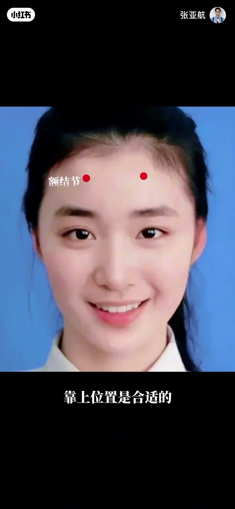
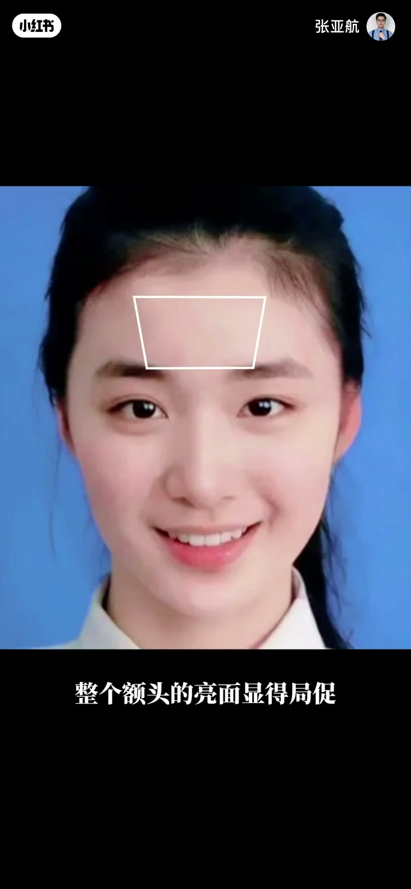
00:49-00:71额结节点位：亮面/灰面的分界
额结节的作用：「额结节确实把额头分为了亮面和灰面」，但早期「灰面和暗面之间的分界线并不明显，灰面的区域变大」。
修复路径：「当额结节的点位调整到合适位置，眉弓视觉高光点外移，上窄下宽的梯形就出现了。」
连锁收益：「开阔的额头反而能够弱化脸的视觉宽度。额结节的位置能够包裹住眉弓，眉弓向下能够和颧骨相呼应，面部结构就是舒展的。」
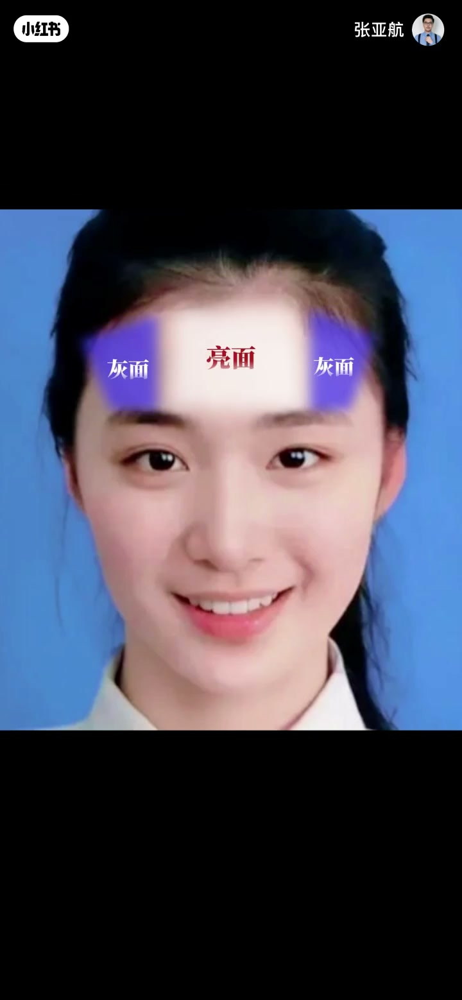

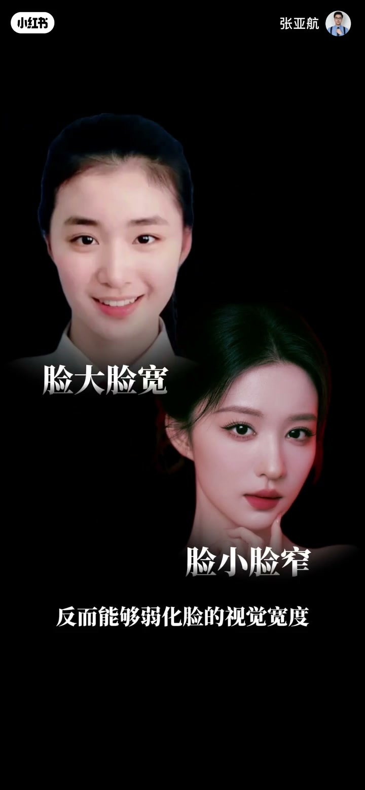
00:76-00:107反面案例：正方形额面的扁平局促
第二个案例诊断：「早期的他，额结节位置过近，眉弓视觉高光点的位置几乎和额结节位置接近垂直，额面的区域是一个正方形。」
连锁问题：「这样的额头扁平且局促小气，也会显得他眼位靠上，下半张脸留白多，视觉显脸长。」
调整方案：「把额结节的位置塑造得靠下，适当向外移，眉弓视觉高光点也调整到合适位置，形成上窄下宽的正梯形。」
结构联动：「额结节和眉弓以及眼眶形成联动关系，外框C能够顺势包裹住颧弓。」效果是从扁平局促变成立体结构——「从以前演小花被人质疑，到现在红毯造型平平出圈，他的美商功不可没。」

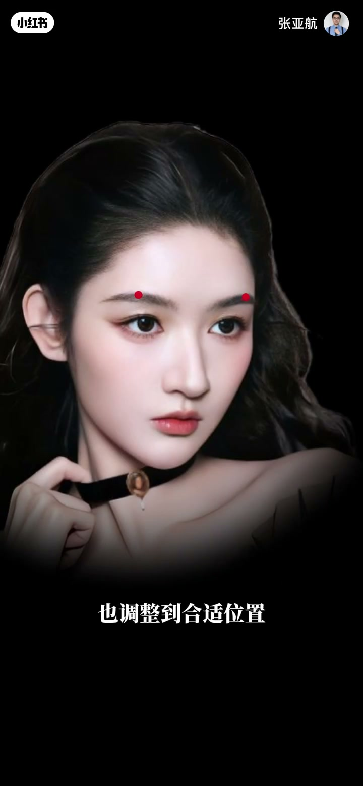
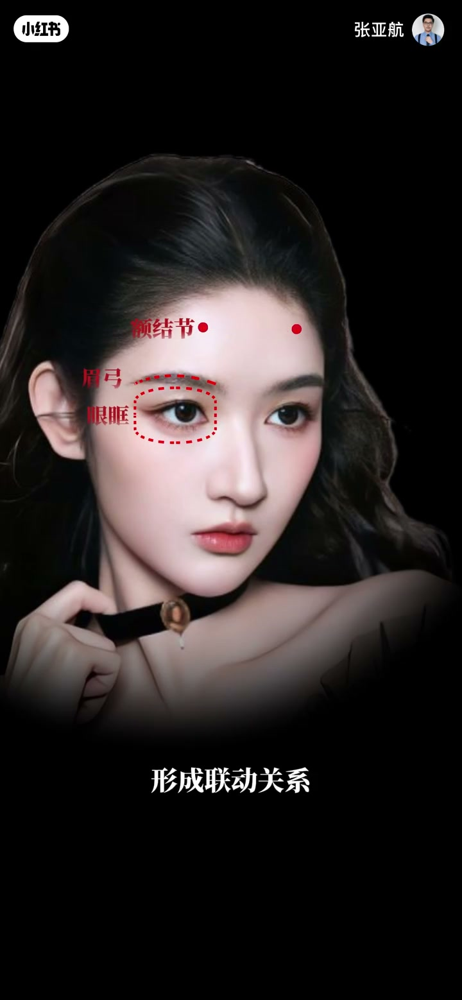
00:109-00:127两个骨点：额顶与额面
结构拆解：「这两个骨点把额头的正面分为上下两个区域，上面为额顶，下面为额面。」
功能分工：「额顶承接头骨，额面衔接T区，形成我们面部的高位，能够收纳我们的面中。」
光影逻辑：「面部有高低，光影打在脸上才有层次。」
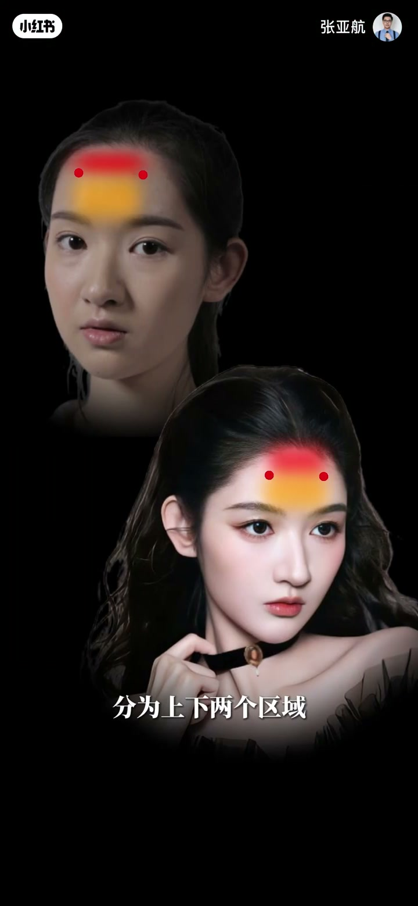
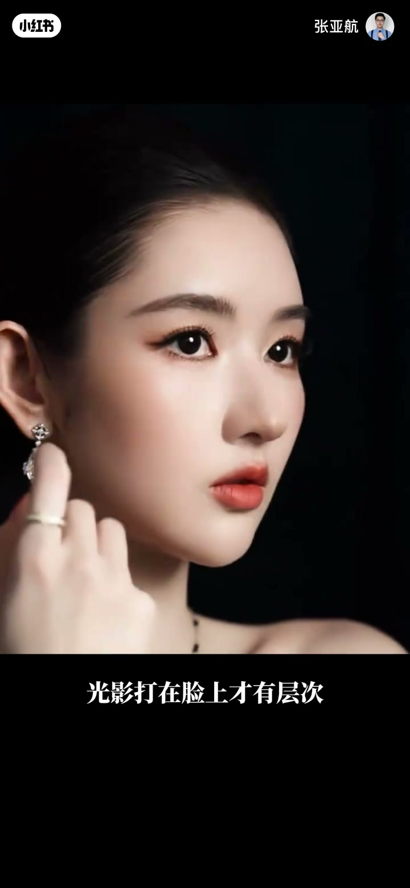
00:128-00:159额颞转折线：球形 vs T面
核心分界线：「这个T形的斜边，是由额结节和眉弓高光点组成的额颞转折线。这条线让额头有了转折，带来了光影变化，也直接决定了额头是球形还是T面。」
转折不足的代价：「这条线如果转折并不明显，得到的额头就是过于圆润的形态……目光向下，反而会觉得中下面部的立体度跟不上额头，只剩额头孤零零在前。」
转折到位的收益：「当这条线的转折明显，额头就能被进一步划分成灰面和暗面，灰面承托亮面，暗面自然向后退，这样的额头不管哪个角度都是好看立体的。」
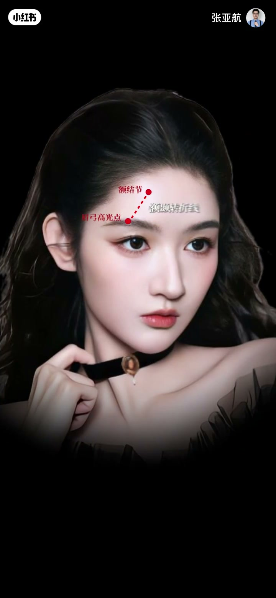
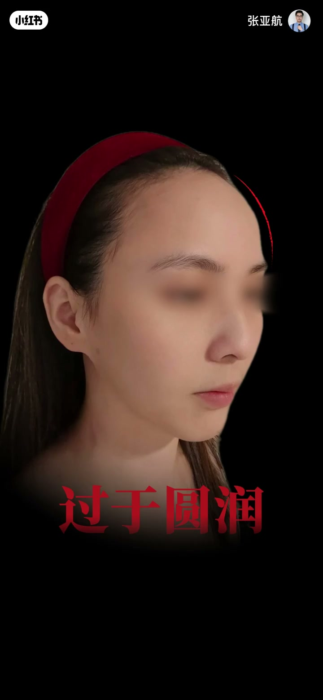
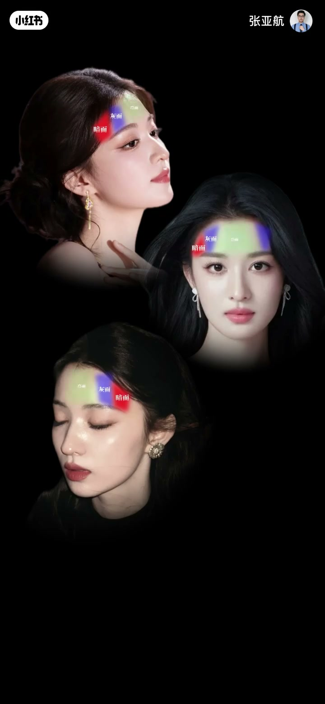
00:160-00:177隐藏细节：颞部饱满与头包脸
不只额头：「如果你以为他们的变化只有额头的塑造，那就错了，还有个小细节就在于颞部的饱满。」
发型也是审美：「不只是变美时去打造颞部和额部的关系，还在发型装饰上，去打造出美术上的卢米斯之圆。」
正确目标：「不是单一打造高颅顶，而是去模拟出饱满的头骨，形成头包脸。」
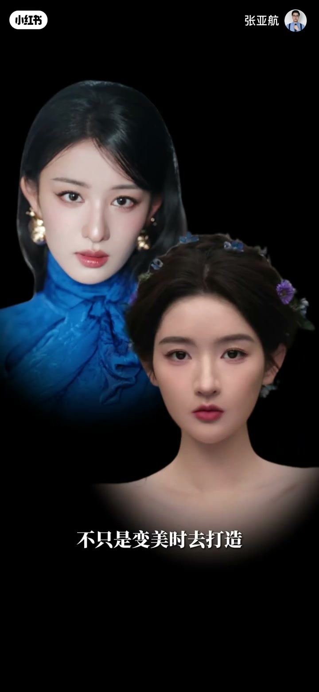
00:178-00:194结语：逻辑严密的变美思路
现象解释：「有些人看着好像哪里都没有变，但就是说不出来的变好看了，背后都是有逻辑严密的变美思路在支撑。」
前瞻判断：「你今天看不懂的调整，三年后会成为主流，等你反应过来的时候，人家已经美了好几年了。」
金句收尾：「我是张亚航，关注我学会审美，再谈变美。」
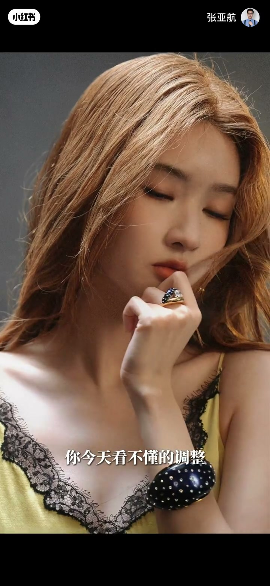
完整转录（114段）
以下文本由 Whisper medium 模型自动转录，可能存在少量识别误差，已尽可能修正。
为什么林青霞能够驾驭住
花瓣型发际线端庄不失柔美
而为什么有些人去做个一模一样的
放在自己脸上总觉得哪里不对劲
要知道发际线的形状是额头骨像的外在表现
不是可以随便贴上去的装饰品
没有那个骨像底子
却硬要做个花瓣型发际线
结果就像戏剧里的贴片子
单看发际线挺好看
但放大到整张脸就是两个字
违和
好看的额头都有一个上窄下宽的梯形
当这个梯形在额头上呈现得当
额头开阔大气
反之就会显得局促
早期的这两张脸
你很难说他们底子不好
但还是不够有新味
你看早期的他
额头的额节节靠上位置是合适的
但这个梯形却是呈现上宽下窄的梯形
眉弓视觉高光点的位置过于靠内
整个额头的亮面显得局促
不够大气舒展
顿感明显
额节节确实把额头分为了亮面和灰面
但灰面和暗面之间的分界线并不明显
灰面的区域变大
当额节节的点位调整到合适位置
眉弓视觉高光点外移
上窄下宽的梯形就出现了
开阔的额头反而能够弱化脸的视觉宽度
额节节的位置能够包裹住眉弓
眉弓向下能够和颧骨相呼应
面部结构就是舒展的
优越的外貌条件
加上适配的气质
能让他驾驭住不同的角色
你再看早期的他
额节节位置过近
眉弓视觉高光点的位置
几乎和额节节位置接近垂直
额面的区域是一个正方形
这样的额头扁平且橘醋小气
也会显得他眼位靠上
下半张脸留白多
视觉显脸长
现在把额节节的位置塑造的靠下
适当向外移
眉弓视觉高光点也调整到合适位置
形成上窄下宽的正梯形
额节节和眉弓以及眼眶形成连动关系
外框C能够顺势包裹住全弓
达到这样的效果
额头也从扁平橘醋
变成了现在的立体结构
从以前演笑花被人质疑
到现在红毯造型平平出圈
他的美伤功不可没
这两个古典
把额头的正面分为上下两个区域
上面为额顶
下面为额面
额顶承接头骨
额面衔接T区
形成我们面部的高位
能够收纳我们的面中
面部有高低
光影打在脸上才有层次
再看这个T形的斜边
是由额节节和眉弓高光点组成的
额捏转折线
这条线让额头有了转折
带来了光影变化
也直接决定了额头是球形还是T面
这条线如果转折并不明显
得到的额头就是过于圆润的形态
单看额头是不错
但目光向下
反而会觉得中下面部的立体度
跟不上额头
只剩额头孤叮叮在前
当这条线的转折明显
额头就能被进一步的
划分成灰面和暗面
灰面承托亮面
暗面自然向后退
这样的额头不管哪个角度
都是好看立体的
如果你以为他们的变化
只有额头的塑造
那就错了
还有个小细节就在于
捏布的饱满
不只是变美时去打造捏布
和额布的关系
还在发型装罩上
去打造出美术上的芦米斯之源
不是单一打造高颅顶
而是去模拟出饱满的头骨
形成头包脸
达到上进目的
有些人看著好像哪里都没有变
但就是说不上来的变好看了
背后都是有逻辑紧密的
变美思路在支撑
你今天看不懂的调整
三年后会成为主流
等你反应过来的时候
人家已经美了好几年了
我是张航
关注我学会神力
再谈变美